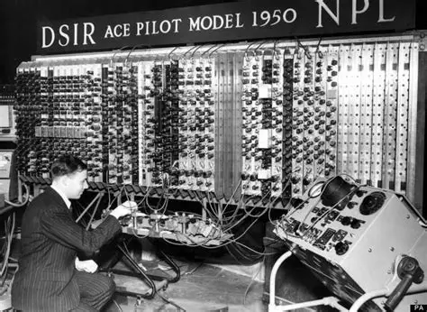
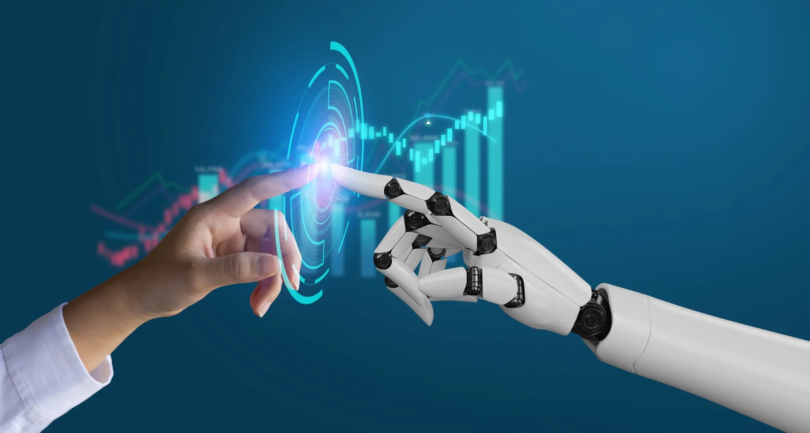

1950 — Turing propõe uma forma de medir inteligência artificial
De volta a Alan Turing: depois de sua contribuição decisiva quebrando códigos alemães durante a guerra


Pós segunda guerra mundial
Ele voltou à pesquisa acadêmica e, em 1950, publicou outro artigo, "Computing Machinery and Intelligence", propondo um experimento para responder a uma pergunta que parecia
filosófica demais para a ciência da época "máquinas podem pensar?". Em vez de tentar definir "pensar" de forma abstrata, Turing propôs um teste prático, hoje chamado de Teste de Turing:
uma pessoa conversa por texto, ao mesmo tempo, com um humano e com uma máquina, sem saber qual é qual, fazendo perguntas livres sobre qualquer assunto; se depois da conversa
ela não conseguir dizer com segurança qual dos dois era a máquina, a máquina "passa" no teste.

A funcionalidade da proposta era elegante justamente por não exigir entender o que se passa "dentro" da máquina, bastava avaliar o comportamento observável dela. O desfecho
não foi uma resposta definitiva.
até hoje esse teste é debatido, criticado e revisitado por pesquisadores, que apontam suas limitações, mas ele lançou as bases filosóficas e práticas de todo o campo que décadas
depois seria batizado de IA. um tema que só ganharia força de verdade muito tempo depois, quando o poder de processamento dos computadores finalmente alcançou a ambição
das ideias de Turing. Ainda assim, a ideia de Turing inspirou tentativas práticas ao longo dos anos. E mais recentemente, com o avanço de sistemas de inteligência artificial generativa
o debate sobre o que realmente significa uma máquina "passar" no teste voltou com força total, já que essas ferramentas conseguem manter conversas fluentes que muitas vezes seriam
difíceis de distinguir de um humano em interações curtas.
